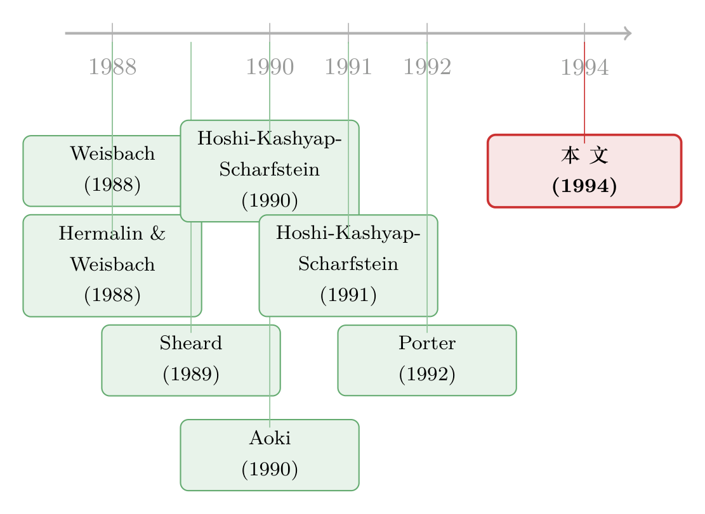

股价一跌，银行家就坐进了董事会——一张日本公司治理的「监督」清单
本文读的是 Kaplan & Minton (1994, Journal of Financial Economics)：在 1980–1988 年的大型日本公司里，外部董事——曾在银行任职的「银行董事」或曾在别家企业任职的「企业董事」——的任命，会随着股价表现变差而显著增加（银行董事还随账面亏损而增加）；任命发生的那一年，在任高管的更替率大幅上升。把同样的分析搬到美国，这种敏感性几乎不存在。结论：在日本，银行与法人股东扮演了一个实实在在的「监督与惩戒」角色。
1 一个关于「谁来管老板」的悬念
先讲一个让 1990 年代初的金融学界吵得不可开交的问题。
在美国，约束一家公司管理层的，是一整套「市场化」的机制：敌意收购、代理权之争、公开的控制权争夺。老板干得不好，股价跌了，外面随时可能冲进来一个买家，把董事会连锅端掉。这套机制吵闹、昂贵，但它至少是可见的——你能在报纸头版上看到它运转。
可日本不是这样。日本的公司治理，被普遍描述成一个「稳定的、基于关系的」系统：一家公司和它的主银行 (main bank)、法人股东 (corporate shareholders)、以及所属的企业集团 (corporate group) 之间，维系着长期而稳定的关系。收购、代理权之争、公开的控制权争夺，在那里都极其罕见。
于是一个尖锐的问题浮出水面：既然外部市场的「鞭子」不存在，那么日本的老板，到底有没有人管？
这恰恰是当年争论的核心，而且分成了几乎对立的三派：
- 一派（乐观派）说：这些关系降低了代理成本、惩戒了管理层，正好替代了美国式的控制权市场。
- 另一派（悲观派）说：恰恰相反，稳定的持股和被内部人把持的董事会，让人几乎不可能赶走在任管理层；关系网真正的作用，是在公司陷入困境时确保它「活下去」——不管它该不该活下去。这是一种针对清算的保险。
- 还有一种折中的看法：日本的老板只要赚得够多、还得起债，就能满足银行；在「满意利润」之上，他们可以为员工、甚至为自己经营公司。
注意这三种说法有一个共同的尴尬：在 Kaplan 和 Minton 之前，它们全都建立在轶事或间接证据上。谁也没拿出一份系统的、跨上百家公司、跨十年的数据，去看一看日本公司治理的「鞭子」究竟落在哪里、什么时候落下。
这篇 1994 年的论文，做的就是这件事。
2 把「无形的关系」变成一个可数的事件
要给一个「看不见的」治理系统称重，第一步是找到一个看得见、数得清的代理变量 (proxy)。
作者的办法很聪明：盯住外部人进入董事会这件事。
首先得说清楚，日本的董事会是个什么样子。样本公司的董事人数中位数是 21 人，其中绝大多数是终身雇员一路升上来的「内部人」。在 1981 财年开始时，中位数公司的董事全部由本公司在职雇员担任；整个董事会里，曾经在别的机构工作过的董事中位数只有 2 个。换句话说，美国意义上的「外部董事」，在日本几乎不存在。
正因为外部人进董事会如此反常，它才成了一个有力的信号。作者据此把「外部人」分成两类：
- 银行董事 (bank directors)：曾受雇于银行的新任董事；
- 企业董事 (corporate directors)：曾受雇于另一家非金融企业的新任董事。
接着，一个自然的问题是：这种事到底有多稀罕？数据给出的答案很有意思——稀罕，但不至于绝迹。在 1980–1988 的样本里，至少任命一位银行董事的，占 7.5%（即 70 个）公司-年；至少任命一位企业董事的，占 5.9%（55 个）公司-年；两者至少有其一的，占 12.9%（120 个）公司-年。而且九成左右的任命，一次只来一个人。
这就是这篇论文整个大厦的地基：把「主银行/法人股东在认真盯着这家公司」这件无形的事，操作化成「外部董事被任命」这个有形的、可数的事件。 它背后是大量的案例证据支撑——当主银行或关联企业开始往一家公司的董事会里塞人，通常意味着它在格外认真地过问这家公司的治理。
3 识别策略：让「业绩」去预测「任命」
有了被解释变量，接下来就是问：什么会触发这种任命？
作者用的是最大似然 Logit 回归 (maximum likelihood logit regression)，被解释变量是一个 0/1 哑变量——某公司在某一年是否任命了至少一位外部董事。解释变量分两组登场，这也是全文叙事最漂亮的地方：先看「业绩」，再加「关系」。
业绩用四个指标度量：(1) 公司股票收益率，(2) 销售增长，(3) 税前利润占总资产比例的变化，(4) 一个「税前利润为负」的哑变量。注意第四个——作者把税前亏损解读为「公司连经营和财务开支都赚不回来」，也就是还债出现困难的信号。每个业绩指标都用当年值和滞后值进入回归，并且都控制了时间期固定哑变量，用来吸收随时间变化的全经济或全市场冲击。
为了不让读者被 Logit 系数绕晕，作者还报告了一个叫 slope 的量：它衡量自变量变动一个单位、在样本均值处、任命概率会变多少。这是个很贴心的设计——它把抽象的对数几率，翻译成了「概率上升/下降几个百分点」。
那么结果呢？
核心发现一：股价是第一推手。 无论是银行董事还是企业董事，任命的可能性都随着股票收益率变差而显著上升。在「银行或企业董事」的合并回归里，股票收益率的 Logit 系数约为 -1.59（标准误 0.66），t 值约 2.4——负号意味着收益越差、任命概率越高。这是一个反直觉但极其干净的关系：在一个据说「不看股价」的治理体系里，股价恰恰是触发外部干预的最强信号。
核心发现二：两类外部人，回应着不同的痛。 银行董事的任命，除了对股价敏感，还随账面亏损（税前利润为负）而显著增加——这正合「主银行最关心你还不还得起债」的直觉。企业董事则不然，它对亏损不那么敏感，更多是对股价表现的回应。
这一步分两组变量登场的设计，是全文的节奏感所在。先用「业绩」立住一个事实：外部干预确实是被坏业绩「叫」出来的。再用「关系」去回答下一个问题——是哪一种关系在叫它。
4 反转之前的铺垫：是「关系」在起作用吗？
确认了业绩会触发任命之后，一个自然的追问是：这种触发，是通过那三条「关系」纽带实现的吗？ 如果答案是肯定的，那才真正坐实了「主银行/法人股东治理」这个故事。
于是作者把关系变量加进回归：
- 银行关系，用两个口径度量。一个是 1980 年（分析开始之前那一年）的银行借款占总资产比例，中位数
0.307；之所以取期初值，是为了降低「业绩反过来决定负债」的内生性。另一个，沿用 Hoshi, Kashyap & Scharfstein (1990) 的做法，用最大贷款人提供的借款占公司全部借款的比例来度量主银行关系的强度，中位数0.132。 - 法人股东集中度，用前十大股东 1980 年的持股比例，中位数
0.368——在日本，大股东大多是法人股东。 - 集团关系，区分金融集团 (financial keiretsu) 与企业集团 (enterprise group)：约
64.7%的样本公司隶属于六大金融集团之一（DKB、富士、三井、三和、住友等），约16.8%隶属于六大企业集团之一（日立、松下、新日铁、日产、东芝、丰田）。
结果非常自洽：
- 银行董事的任命，在银行借款更多的公司里更频繁；
- 企业董事的任命，在股东更集中、以及隶属企业集团的公司里更频繁。
每一类外部人，都恰好沿着它对应的那条关系纽带流入董事会。这不是巧合，这是机制。（关于主银行如何把它的影响力一直延伸到企业的现金决策，可参见《现金为什么堆在日本公司的账上？》。）
5 真正关键的一步：监督，还是保险？
到这里，故事似乎已经讲完了——坏业绩 → 沿着关系纽带 → 外部人进董事会。但这恰恰是全文最危险的地方，也是作者最见功力的一步。
因为前面所有的结果，都同时兼容两种截然相反的解读：
- 监督说：外部人进来，是来「换掉无能的管理层、扭转颓势」的；
- 保险说：外部人进来，只是一个信号——告诉供应商、客户和其他人，主银行或关联企业会兜底这家公司。坏业绩照样触发任命，但任命的目的不是惩戒，而是「保命」。
怎么区分？作者的关键一步，是去看任命与高管更替之间的关系。
逻辑很直接：如果是监督，那么把外部人请进来，应该伴随着在任高管的下岗——你是来换人的；如果只是保险，那么管理层应该安然无恙——你是来站台的。
数据给出了清晰的答案：在外部人被任命的那一年，在任高管的更替率大幅上升，而且这种上升在控制了公司业绩之后依然存在。 两类任命都是如此。换句话说，外部人不是来「站台」的，是来「换人」的。监督说胜出。
这一步是整篇论文的「枢纽」。前面的结果（坏业绩触发任命）只能告诉你「有人在动手」，却分不清动手的是医生还是保镖。只有把高管更替接上来，才把「保险」这个对立假说一脚踢开。
作者还补了两块旁证，把这个结论钉得更牢：
第一块旁证，来自美国这面镜子。 把同样的分析搬到 146 家美国大公司，会发现什么？美国外部董事的任命，对股价和盈利表现远没有日本那么敏感；更重要的是，美国的高管更替对外部董事任命几乎无动于衷。唯一与日本有几分神似的，是「关联大股东（blockholder）派人进董事会」——它对业绩的敏感度和日本的外部任命差不多，更替率也确有上升。但问题在于频率：美国的 blockholder 任命只发生在 2.3% 的公司-年里，还不到日本外部任命频率的 20%。也就是说，那个在日本天天上演的治理动作，在美国几乎是个稀客。（关于美国语境下「银行家进董事会」的另一面——监督与利益冲突，可参见《银行家坐进董事会：是来盯梢的，还是来惹官司的？》。）
这里要小心一个对比口径：美国的「外部董事」遍地都是，任命发生在 51% 的公司-年里，中位数 15 名董事里有 10 名是外部董事——所以美国外部任命对业绩不敏感，并不奇怪，因为它太常规了。真正可比的，是那个稀缺的、带着大股东背景的 blockholder 任命；而即便是它，频率也远低于日本。
第二块旁证，来自任命前后的业绩轨迹。 监督/惩戒说预言：业绩差的公司换上能扭转局面的人之后，业绩会改善。数据显示：银行董事被派往的是正在收缩或陷入财务困境的公司，企业董事被派往的是有暂时性问题的公司；而在两类任命之后，公司业绩都企稳并温和改善。（日本公司在业绩下滑期的整体重组图景，可参见《corporate-restructuring-during-performance-declines-in-japan》。）
6 顺手推翻的两个流行说法
把核心讲透之后，作者顺势处理了两个当年很有市场的论断。
其一，是 Porter (1992) 等人的看法：日本的公司治理体系几乎不在意当前股价和其他「短期」业绩指标。可本文的结果恰恰相反——股价和当期盈利，正是外部任命最强的驱动因素。这与「日本只看长期、不看股价」的浪漫想象，是直接冲突的。
其二，是 Hoshi, Kashyap & Scharfstein (1993) 和 Kester (1991) 的担忧：1980 年代的金融自由化和企业的经营成功，削弱了日本的治理关系。作者于是专门检验了「任命对业绩的敏感性是否随时间退化」——结论是没有发现这种退化。至少在这个样本期内，治理关系还稳稳地运转着。
它也顺带否定了那个折中派的说法：如果老板真能「只要赚到满意利润就为自己经营」，那么外部干预就不该被股价主导。但事实是，外部任命最强烈地被糟糕的股价表现驱动——这条路被堵死了。
7 文献脉络
把这篇论文放回它的时代，能看得更清楚。
最早，是一批描述性的工作在勾勒日本治理的轮廓：Aoki (1990) 给出了日本企业的经济模型；Sheard (1989) 论证了主银行系统在监督与控制中的角色。它们提供了丰富的制度图景和案例，但缺一个系统的实证检验。
接着，是一条主银行金融的硬证据线：Hoshi, Kashyap & Scharfstein (1990, 1991) 用日本面板数据，证明了主银行关系如何降低财务困境成本、缓解投资对现金流的敏感——本文度量「主银行关系强度」的那把尺子（最大贷款人占比），正是直接接过他们的衣钵。

与此同时，美国这边的董事会研究也在成形：Weisbach (1988) 发现外部董事与 CEO 更替相关，Hermalin & Weisbach (1988) 研究董事会构成的决定因素。它们为本文的「美国镜子」提供了方法论和对照基准。
本文 (Kaplan & Minton, 1994) 站在这两条线的交汇处：它把美国「董事会—高管更替」的实证范式，移植到日本「主银行—关系治理」的制度土壤上，第一次用系统数据回答了「谁在管日本的老板」。它的姊妹篇 Kaplan (1994, JPE) 则进一步比较了日美两国「高管薪酬—业绩」的敏感度，殊途同归地指向同一个结论：日本的治理，并不像传说中那样对业绩麻木。
8 评论与延伸（Q&A + 研究方向）
(a) 几个可能的疑问
Q：用「外部董事任命」来代理「治理强度」，会不会本末倒置？万一任命本身就是业绩差的结果，而非治理的原因？
这正是作者把高管更替接上来的原因。如果任命只是坏业绩的被动伴生物（比如保险站台），它不该系统性地伴随在任高管下岗。但数据显示，控制业绩之后，任命当年的更替率依然显著上升——这说明任命携带了「换人」这个独立的治理动作，而不仅仅是业绩的影子。
Q：股价对任命的预测力，会不会只是反向因果——市场提前嗅到「要派人来了」，于是股价先跌？
论文的设定是用当年与滞后的业绩去预测任命，且关系变量取自分析开始前的 1980 年，正是为了压住这种内生性。不过严格说，「市场预期到治理介入」这种前瞻性反应无法被完全排除，这是 Logit 预测框架的固有局限，而非本文独有。
Q：日本的「外部董事」和美国的 outside director 是一回事吗？直接比较公平吗？
不是一回事，作者也坦承这一点。日本的外部人是「曾受雇于银行或别家企业、通常在董事级别空降进来」的前雇员；美国的外部董事是「既非现任也非前任高管」的独立董事。两者定义不同，所以作者强调真正可比的是美国的 blockholder 任命——带着大股东背景、稀缺、且对业绩敏感的那一类。
Q：72% 的银行董事被描述为「只是样本公司的雇员」，那他们还算外部人吗？
这些人超过九成是在被任命为董事的同一年才加入样本公司的——也就是说，他们是带着银行的背景空降进来、随即切断（或保留）原职。作者做了稳健性检验：无论是否把保留原职务的人单列、是否把少数有任职前经历的人剔除，结果都定性不变。
Q：这是不是只是「大公司样本」的特例？119 家 Fortune 榜上的巨头，能代表日本企业吗？
这是个真实的外部效度限制。样本来自 1981 年 Fortune「最大外国工业企业」榜，全是巨头，主银行关系也最典型。结论能否推广到中小日本企业，本文无法回答——而恰恰是中小企业，主银行的「监督 vs. 保险」张力可能更尖锐。
Q：业绩在任命后「企稳改善」，会不会只是均值回归 (mean reversion)，跟外部人没关系？
这是对「监督有效」最有力的质疑。本文没有一个干净的反事实（没有「该任命却没任命」的对照组），所以「改善」究竟是新人扭转的，还是坏业绩本就要回弹的，无法完全分清。作者的论证更多是「方向一致」，而非严格因果。这也是后续研究最该补的一环。
(b) 几个可能的研究问题与提案
1. 外资持有人会不会「接管」主银行的监督角色？
【经济故事】本文写的是 1980 年代——主银行如日中天的年代。但此后三十年，日本经历了主银行体系的衰退与外资持股的崛起。一个自然的问题是：当主银行退场，外资机构投资者是否填补了「坏业绩 → 派人/换人」的监督空缺？还是说日本公司就此进入了一段「无人监督」的真空期？ 【可行性】中。需要日本上市公司董事会构成与外资持股的长面板（如 Nikkei NEEDS、东洋经济股东数据），识别上可借鉴本文的 Logit 框架，并用外资持股变动构造准实验。难点是外资持股本身的内生性。
2. 把「外部董事任命」这个事件，搬到公司债定价上。
【经济故事】本文证明外部任命是治理介入的信号。那么债权人会怎么反应？如果银行董事进来意味着「主银行将加强监督、并可能兜底」，公司债的信用利差应在任命公告前后收窄；若市场读出的是「公司已病入膏肓」，利差则可能走阔。这能把「监督 vs. 保险」之争从股权一侧延伸到信用市场一侧。 【可行性】中偏低。日本公司债二级市场流动性与高频报价数据稀缺，是主要障碍；可考虑用一级发行利差或 CDS（覆盖面有限）替代。
3. 主银行关系强度，是否预测了危机中的「流动性兜底」？
【经济故事】本文的「保险说」虽被否定为任命的主要动机，但「主银行兜底」本身可能在系统性危机中才真正现形。可以检验：主银行关系越强的公司，在 1997 亚洲金融危机或 2008 危机中，是否获得了更稳定的信贷供给、更小的融资缺口？这等于给「关系即保险」找一个真正的压力测试场景。 【可行性】高。日本企业的银行借款数据可得，危机提供了清晰的时间断点，识别上可用主银行自身的健康度作为外生冲击（参考挪威、韩国银行危机的做法）。
4. 「派人进董事会」与「调整高管薪酬」，是替代还是互补的治理工具？
【经济故事】Kaplan (1994, JPE) 已表明日本高管薪酬对业绩敏感。一个未被回答的问题是：这两种工具——派外部人 vs. 调薪/换人——是同一批公司在同时使用（互补），还是不同治理结构的公司各用一种（替代）？这能刻画日本治理「工具箱」的内部结构。 【可行性】中。需要同时拿到董事任命、高管更替与薪酬三套数据，匹配难度较大，但样本期内的大公司有较好的披露。
9 我的判断
贡献。 这篇论文最大的价值，不在于某个惊人的系数，而在于它第一次把一个被轶事和意识形态笼罩的命题，钉在了系统数据上。在它之前，「日本治理是监督还是保险」是一场各执一词的口水仗；在它之后，至少有了一个干净的事实锚点：外部任命被坏股价驱动、伴随高管下岗、沿着关系纽带流动、且在美国找不到对应物。它用「外部董事任命」这个可数事件，把「无形的关系」变成了可检验的对象——这种把问题操作化的功夫，是实证公司金融的范本。
对识别的担忧。 我有两点保留。其一，全文是预测性的 Logit，不是因果设计；「坏业绩触发任命」很扎实，但「任命改善业绩」缺一个反事实，均值回归的幽灵始终没被驱散。其二，样本是 119 家巨头，主银行关系最典型、最强势——这既是它最干净的地方，也是它最受限的地方。结论能否推广到中小企业、推广到主银行衰退后的年代，本文管不着。
后续想看到什么。 我最想看的，是把这套框架沿时间轴拉长三十年：当主银行体系退潮、外资持股涌入，那条「坏业绩 → 派人/换人」的曲线，是平移到了外资身上，还是干脆断掉了？再往前一步，则是把它接到信用市场——债权人对「银行董事进董事会」的定价，才是检验「监督 vs. 保险」最诚实的法庭。这两个方向，恰好落在外资持有人与公司债流动性的交叉口上，也是这篇 1994 年的老论文，留给今天最值得接的一根线头。
参考文献
Aoki, M. (1990). Towards an economic model of the Japanese firm. Journal of Economic Literature 28, 1–27.
Aoki, M., Patrick, H., & Sheard, P. (1994). The Japanese main bank system: An introductory overview. In M. Aoki & H. Patrick (eds.), The Japanese Main Bank System. Oxford University Press.
Hermalin, B., & Weisbach, M. (1988). The determinants of board composition. RAND Journal of Economics 19(4), 589–606.
Hoshi, T., Kashyap, A., & Scharfstein, D. (1990). The role of banks in reducing the costs of financial distress in Japan. Journal of Financial Economics 27(1), 67–88.
Hoshi, T., Kashyap, A., & Scharfstein, D. (1991). Corporate structure, liquidity, and investment: Evidence from Japanese panel data. Quarterly Journal of Economics 106(1), 33–60.
Kaplan, S. N., & Minton, B. A. (1994). Appointments of outsiders to Japanese boards: Determinants and implications for managers. Journal of Financial Economics 36(2), 225–258.
Kaplan, S. N. (1994). Top executive rewards and firm performance: A comparison of Japan and the U.S. Journal of Political Economy 102(3).
Kester, W. C. (1991). Japanese Takeovers: The Global Contest for Corporate Control. Harvard Business School Press.
Porter, M. (1992). Capital disadvantage: America's failing capital investment system. Harvard Business Review, Sept.–Oct., 65–83.
Prowse, S. (1990). Institutional investment patterns and corporate financial behavior in the U.S. and Japan. Journal of Financial Economics 27(1), 43–66.
Sheard, P. (1989). The main bank system and corporate monitoring and control in Japan. Journal of Economic Behavior and Organization 11(3), 399–422.
Weisbach, M. (1988). Outside directors and CEO turnover. Journal of Financial Economics 20, 431–460.